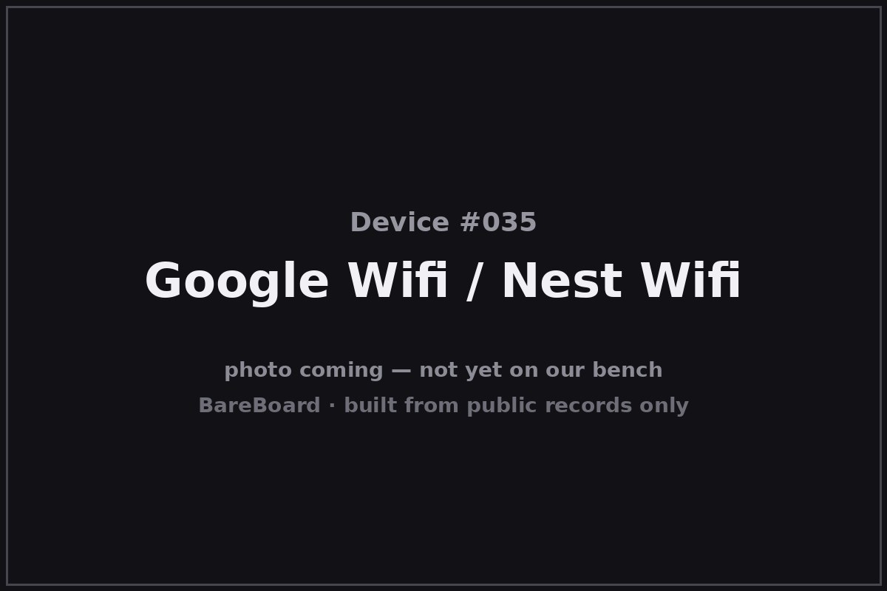

The Autopsy Report · Device #035
Google Wifi (2016) / Nest Wifi (2019)
The little white cylinders that made mesh Wi-Fi a household word — and the sequel that hid a smart speaker inside your router.
What is this thing?
Google Wifi (2016) is a mesh Wi-Fi system: small white cylinders you place around the house that link together into one seamless wireless network, replacing the single-router-in-the-corner model. Nest Wifi (2019) is its successor — a Router plus smaller Points that double as Google Assistant smart speakers. Both are dual-band systems managed through an app rather than a web admin page. TechCrunch (announcement) VentureBeat (Nest Wifi)
Two products, two FCC authorizations: Google Wifi is A4RNLS-1304-25 (Google LLC, 2016); the Nest Wifi Router is the separate A4R-H2D. Kept separate here, as the filings are. FCC filing (Google Wifi)
Not on our bench (yet)
This device is not on our bench. We have never owned, opened, photographed, measured, or powered on Google Wifi / Nest Wifi. Everything in this report comes from public records: government filings, manufacturer documents, manuals, and credible public teardowns and hardware databases. Where a fact would require holding the hardware in our hands — our own photos, our measurements, our boot logs, the exact board revision of a future unit — we say so, out loud, and mark it unknown. Nothing here is presented as first-hand BareBoard evidence.
That constraint is also the point: you can learn a remarkable amount about a device without ever touching it, because the public record is deep. What follows is everything the record could tell us — and an honest map of where the record runs out.
A short history
- 2016-10-04Google announces Google Wifi — modular, app-managed mesh networking for the home. TechCrunch
- 2016-11-14The FCC grants equipment authorization A4RNLS-1304-25 to Google LLC for the Google Wifi dual-band router. FCC filing (Google Wifi)
- December 2016Google Wifi ships; pre-orders had opened in November. Engadget
- October 2019Google announces Nest Wifi: a new Router plus Points with Google Assistant built in. Availability follows on November 4, 2019. VentureBeat HardwareZone
The outside
Google Wifi is a squat white cylinder — deliberately appliance-like, designed to sit on a shelf without looking like networking gear. One gigabit WAN port, one gigabit LAN port, USB-C power, and a single LED ring. The Nest Wifi Router is a taller soft-rounded unit; the Points are smaller domes with a speaker grille and a capacitive touch top. FCC filing (Google Wifi) VentureBeat (Nest Wifi)

No web admin page, no wall of blinking LEDs: both generations are set up and managed from the Google Home app, which is also how they receive their automatic updates.
The board
Inside Google Wifi, public records describe a Qualcomm Atheros IPQ4019 SoC — a quad-core ARM chip designed specifically for mesh/Wi-Fi systems — paired with a QCA8075-family part handling the wired-Ethernet side. The FCC filing's internal-photo exhibits reportedly show QCA8072/QCA8075 variants across photos, though only one variant ships in any given unit — a reminder that filing photos can span hardware spins. FCC filing (Google Wifi)
The Nest Wifi Router (A4R-H2D) is a separate authorization with its own exhibits; we did not conflate its hardware with Google Wifi's.
Under the microscope: the chips
What's inside Google Wifi, per the equipment-authorization exhibits and public records. Confirmed means a primary source — the FCC filing.
| Chip | What it does | How we know | Dig deeper |
|---|---|---|---|
| Qualcomm Atheros IPQ4019 | The main SoC — a quad-core ARM chip built for Wi-Fi systems, running the mesh software. | Confirmed Named in the FCC filing's public exhibits for A4RNLS-1304-25. | FCC filing |
| Qualcomm Atheros QCA8075 | Wired-networking companion silicon (Ethernet switch/PHY family). | Likely Public records name the QCA8075; filing photos reportedly show QCA8072/QCA8075 variants, with one variant per shipped unit. | FCC filing |
Memory and flash part numbers are not verified from the public exhibits we could access. No public datasheets were located for these Qualcomm Atheros parts.
The government's file on this box
The government's file on Google Wifi is public under FCC ID A4RNLS-1304-25, granted to Google LLC on November 14, 2016, as a dual-band wireless router. FCC filing (Google Wifi)
- Lab power figures (filing-specific): about 656 mW conducted at 2.4 GHz, 439 mW at 5.18–5.24 GHz, and 535 mW at 5.745–5.825 GHz.
- Separate product, separate filing: the Nest Wifi Router is authorized as A4R-H2D — different hardware, different docket.
Browse it yourself: filing page
Service, recovery, and debug modes
We listen, we don't knock: this section documents only that service or recovery modes exist in the public record, and what kind of thing they are — never how to defeat a lock.
We located no public manufacturer documentation of a service, recovery, or debug mode for Google Wifi or Nest Wifi — no rescue button sequence, no published console, no restoration utility in the public record we could verify. These units are designed to be managed entirely through the Google Home app, including resets and firmware updates.
That absence is itself a finding: it means every recovery path we could confirm is app-mediated, and anything deeper (serial headers, bootloader behavior) is unknown until a unit reaches a bench.
What the public record shows
Mesh went mainstream here. Google Wifi didn't invent mesh networking, but the 2016 launch — simple cylinders, app setup, one network name across the house — is what carried the idea from enthusiasts to everyone else. The public record (announcement to ship in two months) shows how fast Google moved.
The sequel merged two product categories. Nest Wifi's Points are Wi-Fi nodes and Assistant speakers — the router as furniture, the speaker as infrastructure. Whether that's elegant or eavesdroppy depends on your threat model; the hardware fact is just that the two jobs share one enclosure.
Filing photos can span hardware spins. The QCA8072/QCA8075 variant notes in the exhibits are a small cautionary tale: even primary sources need reading carefully — what was photographed for certification isn't always what shipped.
What we didn't do
- We never had a unit, so we took no photographs and no measurements.
- We never opened an enclosure or lifted an RF shield.
- We never captured a boot log or probed a debug port.
- We never extracted, modified, redistributed, or ran the device's firmware.
- We never defeated a lock, bypassed authentication, or recovered credentials or keys — and we publish none.
- We never tested an exploit or a vulnerability against any device.
- Anything below marked Unknown stays unknown until a unit reaches our bench.
By the numbers
- Devices: Google Wifi (2016); Nest Wifi Router + Point (2019)
- FCC IDs: A4RNLS-1304-25 (Google Wifi; Google LLC; granted 2016-11-14) · A4R-H2D (Nest Wifi Router, separate)
- Announced / shipped: Google Wifi: 2016-10-04 / Dec 2016 · Nest Wifi: Oct 2019 / 2019-11-04
- Conducted power (Google Wifi filing): ~656 mW @ 2.4 GHz; ~439 mW @ 5.18–5.24 GHz; ~535 mW @ 5.745–5.825 GHz
- Main chip: Qualcomm Atheros IPQ4019 (quad-core ARM)
- Management: Google Home app; automatic updates; no web admin page
Words to know
Every term this page uses, in plain English. No prior knowledge required.
- Mesh Wi-Fi
- Several small access points working as one network, so your devices roam between them instead of clinging to one distant router.
- Node / Point
- One unit in a mesh system. Google's 2019 nodes are called Points and include a smart speaker.
- Dual-band
- A system using both 2.4 GHz (longer range) and 5 GHz (faster) Wi-Fi.
- System on a chip (SoC)
- The whole computer — processor and support hardware — on one piece of silicon.
- FCC ID
- The ID the FCC assigns to each approved wireless product. Punch it into fccid.io and the whole public filing comes up.
- FCC
- The Federal Communications Commission — the U.S. agency that regulates anything that transmits radio.
Sources & confidence
- FCC equipment authorization A4RNLS-1304-25 (grantee Google LLC, grant 2016-11-14; conducted powers ~656/~439/~535 mW per band): primary evidence. High confidence.
- Chip identities (IPQ4019; QCA8075 with QCA8072/QCA8075 photo variants): the filing's public exhibits and public hardware records. IPQ4019 high confidence; QCA8075 medium (variant caveat).
- Launch and ship dates: TechCrunch (2016-10-04 announcement), Engadget (Nov 2016 pre-order/Dec ship), VentureBeat (Oct 2019 Nest Wifi), HardwareZone (2019-11-04 availability). High confidence in attribution.
- Nest Wifi Router's separate authorization (A4R-H2D): the FCC record. High confidence.
- No verified public record of a manufacturer service/recovery/debug mode was located; stated as a gap, not a claim.
Anything not listed here is unknown until the bench says otherwise. We'll say so, out loud, when that's the case.
Legal note. BareBoard is an educational project. This page is built entirely from public records — government filings, manufacturer documents, and published third-party research — about hardware we have never possessed. We don't publish, host, or distribute firmware, keys, passwords, or credentials, and nothing here is instructions for defeating a lock or an authentication check. Product names and trademarks belong to their respective owners and appear here only to identify the hardware. If you believe anything here infringes your rights, contact us and we'll address it promptly.